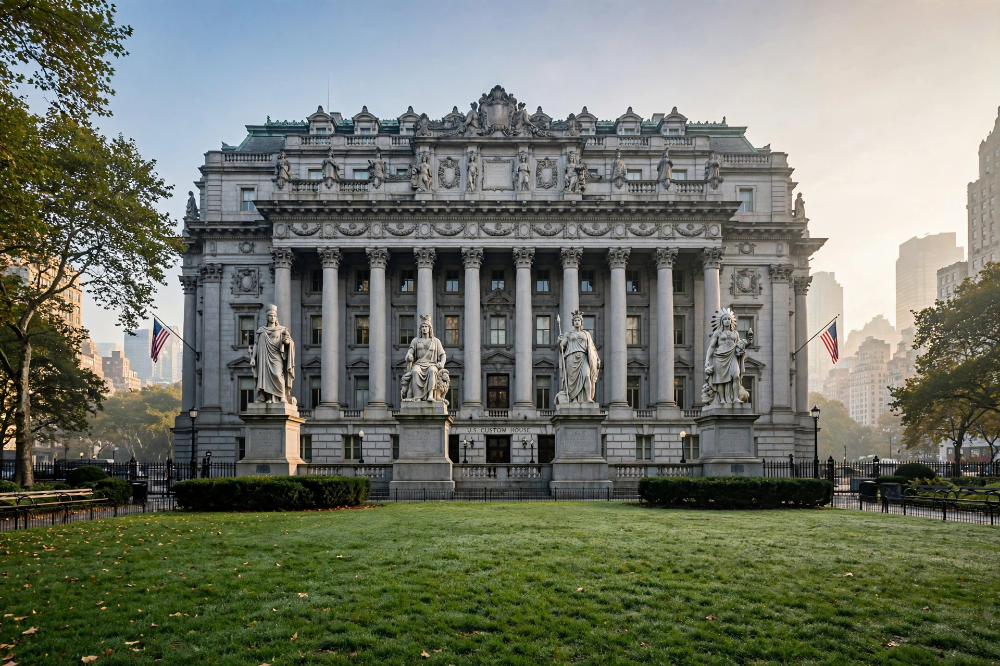

Alexander Hamilton U.S. Custom House
The Alexander Hamilton U.S. Custom House is a government building at 1 Bowling Green in the Financial District of Manhattan, New York City. Built in 1902–1907 in the Beaux-Arts style to the designs of architect Cass Gilbert, it served as the Custom House for the Port of New York, then the nation's busiest port and the source of most federal customs revenue. The building was designated a National Historic Landmark in 1976 and now houses the George Gustav Heye Center of the National Museum of the American Indian, as well as a U.S. bankruptcy court and the National Archives' New York offices.

| Alexander Hamilton U.S. Custom House | |
|---|---|
| Location | 1 Bowling Green, New York City |
| Built | 1902–1907 |
| Architect | Cass Gilbert |
| Style | Beaux-Arts |
| NRHP | Added 1972; National Historic Landmark 1976 |
Architecture
The seven-storey steel-frame building is clad in Maine granite and lavishly decorated with maritime imagery. In front of the facade stand Daniel Chester French's monumental Four Continents statues (Asia, America, Europe and Africa), sculpted 1903–1907. Inside, the great central rotunda has an oval skylight and murals by Reginald Marsh (1937) depicting scenes of shipping in New York Harbor.
History
The site was previously occupied by Fort Amsterdam and Government House. Named for Alexander Hamilton, the first Secretary of the Treasury and founder of the U.S. Customs Service, the building housed customs operations until 1974, when they moved to the World Trade Center. After a long restoration it reopened in 1994 as the New York branch of the National Museum of the American Indian.
See also
Categories: Buildings in Manhattan · National Historic Landmarks in New York City · Beaux-Arts architecture